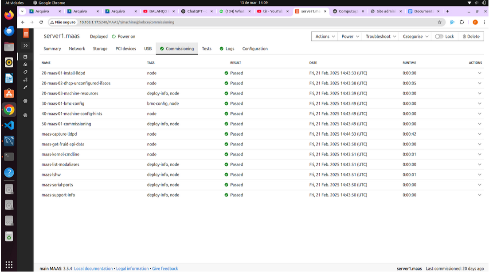

Main
Objetivo
Este Roteiro tem o objetivo a documentação e implementação de conceitos sobre uma plataforma de gerenciamento de hardware
Tarefa 1
1. Verificar se está funcionando e se o status está ativo.

2.Verificar acessibilidade na própria máquina:
Foi executado o seguinte comando
psql -U cloud -h 172.16.0.4 tasks
-U cloud: Específica o usuário do banco de dados, que no caso é cloud.
-h 172.16.0.4: Define o host (endereço IP) do servidor PostgreSQL ao qual você deseja se conectar. Neste caso, a conexão será feita para o IP 172.16.0.4, que pode ser um outro servidor na rede ou até mesmo o próprio servidor se esse for o IP dele.
tasks: Define o nome do banco de dados ao qual o usuário cloud tentará se conectar.
Esse código foi executado dentro do Server1.

3. Acessibilidade a partir da máquina main:

Usando o mesmo comando para verificar a conexão interna, porém agora a partir da minha máquina main. Instalamos o client na main usando o comando:
sudo apt update && sudo apt install postgresql-client -y
4. Porta em que o serviço está funcionando:
Ao executar o nmap. Foi conferido que o serviço está rodando na porta 5432: 5432/tcp open postgresql
Tarefa 2
1.Do Dashboard do MAAS com as máquinas.

2.Da aba de imagens, com as imagens sincronizadas

3. Testes de Hardware para cada máquina
máquina 1:


máquina 2:


máquina 3:

máquina 4:


máquina 5:

Tarefa 3
1.máquinas e respectivos IPs

2.Aplicação Django

3.Explicação da aplicação manual do Django:
a. Deploy feito pelo dashboard do maas - deploy por linha de comando não estava funcionando
b. No ssh do server2 foi clonado o seguinte repositório:
git clone https://github.com/raulikeda/tasks.git
./install.sh
sudo reboot
wget http://[172.16.0.9]:8080/admin/
mudança no etc/hosts
172.16.0.4 server1 (onde estava instalado o postgres)
g. Tunel ssh:
conectanmos no maas utilizando:
ssh cloud@10.103.0.X -L 8001:[172.16.0.9]:8080
user: cloud
senha: cloud
Tarefa 4
1. De um print da tela do Dashboard do MAAS com as 3 Maquinas e seus respectivos IPs.
2.De um print da aplicacao Django, provando que voce está conectado ao server2

3.De um print da aplicacao Django, provando que voce está conectado ao server3

4. Explique qual diferenca entre instalar manualmente a aplicacao Django e utilizando o Ansible.
Com o Ansible, a instalação é automatizada por meio de playbooks, garantindo consistência, rapidez e escalabilidade, ideal para múltiplos servidores. Enquanto a abordagem manual oferece mais controle ela exige uma instalação para cada máquina tornando-o menos escalável.
Tarefa 5.
1. De um print da tela do Dashboard do MAAS com as 4 Maquinas e seus respectivos IPs.
2.Altere o conteúdo da mensagem contida na função index do arquivo tasks/views.py de cada server para distinguir ambos os servers.
server 2:
server 3:
3.Faça um GET request para o path que voce criou em urls.py para o Nginx e tire 2 prints das respostas de cada request, provando que voce está conectado ao server 4, que é o Proxy Reverso e que ele bate cada vez em um server diferente server2 e server3.
Criando o tunel:
Forçando o django a rodar na porta 8000 do server2:

Forçando o django a rodar na porta 8000 do server3:

Acessando os servers via localhost de um browser server 2:
server 3:

Discussões
A instalação manual do PostgreSQL e Django foi direta, assim como o uso do SSH e MaaS CLI, facilitando o deploy inicial. No entanto, configurar DHCP, DNS e firewall exigiu atenção para garantir conectividade. O balanceamento de carga com Nginx foi desafiador, demandando ajustes nas regras de roteamento. Ferramentas como Ansible simplificaram o processo, tornando a implantação mais eficiente.
Conclusão
A instalação manual ajudou a entender cada parte do processo, mas exigiu mais tempo e cuidado com detalhes. O Ansible simplificou o deploy, tornando-o repetível e confiável. O MaaS facilitou o gerenciamento das máquinas, mas configurar rede e balanceamento de carga exigiu mais testes e ajustes.